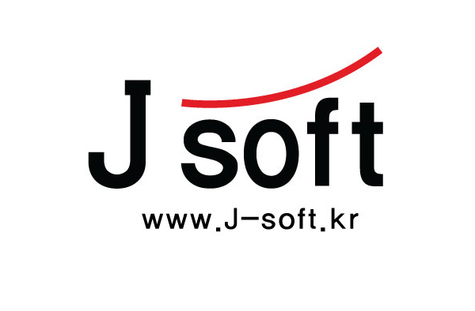

로고 컨셉
-웹페이지, 건물 간판, 머그컵 등 다양한 크기로 활용할 수 있도록 벡터 이미지로 제작.
-기독교적인 의미를 담고 싶다는 요구가 있었음. 기독교에서 예수 그리스도를 상징하는 붉은색을 넣음.
-붉은 라인이 위쪽을 향하며 비상하는 모양은 회사의 번영을 상징.
-웹페이지, 건물 간판, 머그컵 등 다양한 크기로 활용할 수 있도록 벡터 이미지로 제작.
-기독교적인 의미를 담고 싶다는 요구가 있었음. 기독교에서 예수 그리스도를 상징하는 붉은색을 넣음.
-붉은 라인이 위쪽을 향하며 비상하는 모양은 회사의 번영을 상징.